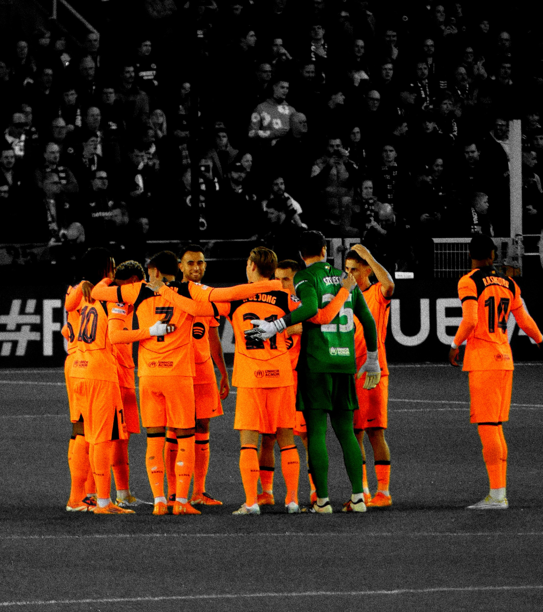
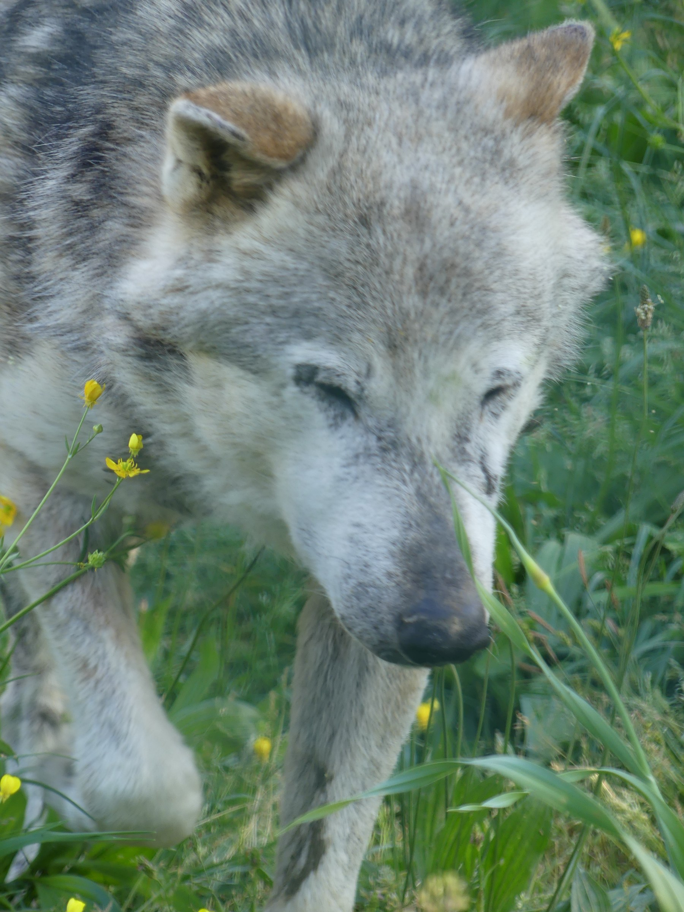

seen through my lens
i don't take photos to show what happened. i take them to show what it felt like to be there.
a camera only sees what's in front of it. art is deciding what matters in the frame - and what doesn't.
all that i capture lives in my vision - the way i see things. every photo is me showing you the world the way i saw it in that moment.
a moment is gone in a second - a photo keeps it. that's the value : holding on to what would otherwise disappear.


i don't take photos to show what happened. i take them to show what it felt like to be there.